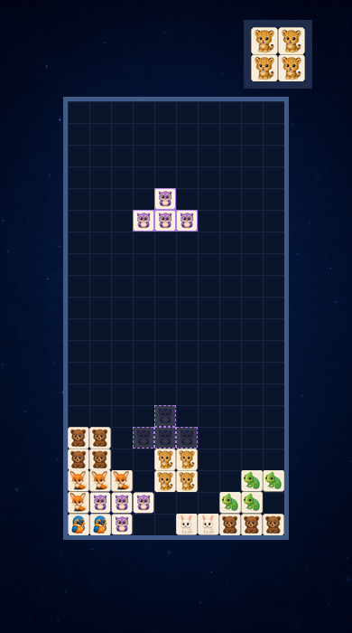
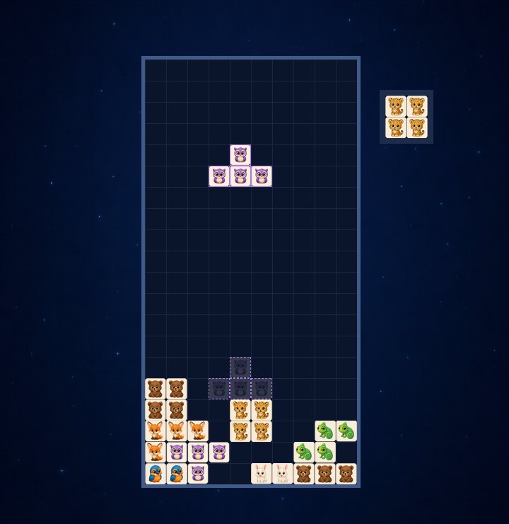
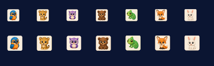

手机构图 · 24px 格

萌兽方块分数 1,240 最高分 3,600等级 2 已消行 11下一块
左移旋转右移软降硬降暂停
桌面构图 · 30px 格

萌兽方块分数1,240
最高分 3,600
等级 2
已消行 11
← → 移动
↑ 旋转 ↓ 软降
空格 硬降
P 暂停下一块
暂停重新开始
原尺寸辨识样张
第一排 24×24，第二排 30×30；按交接 sourceRect=[16,16,224,224] 从正式 WebP 派生，不是另外生成的替代动物。缩小后斑点、羽毛等细节会消失，以主色、耳形、大眼和轮廓辨识。

I 翠鸟O 幼豹T 猫头鹰J 熊S 变色龙L 狐狸Z 兔
资源与交接
没有远程资源、脚本、在线字体或交互依赖。此页文字为中文 DOM，不烘焙进图片。窄于390px时预览等比缩小，仅用于查看；实际游戏应重新计算格尺寸与44px触控区，不能照搬缩小截图作为界面。